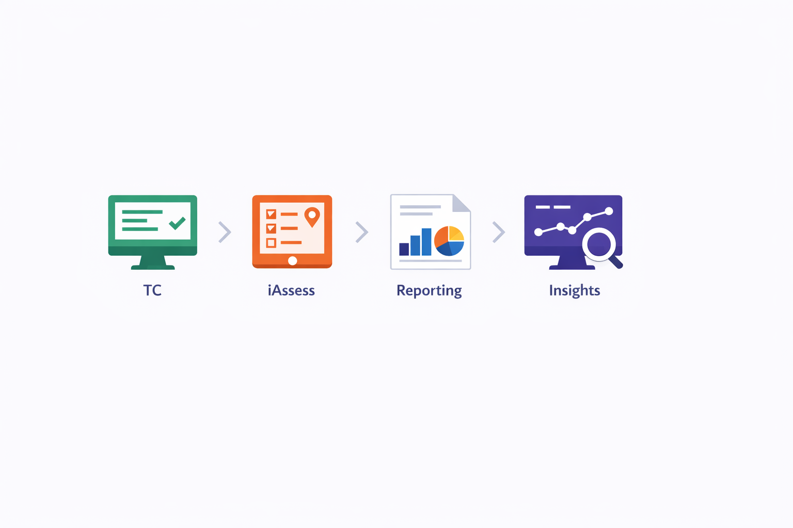
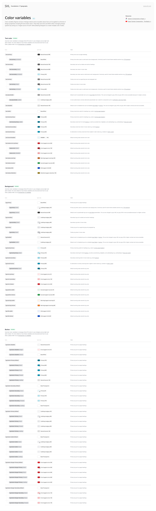
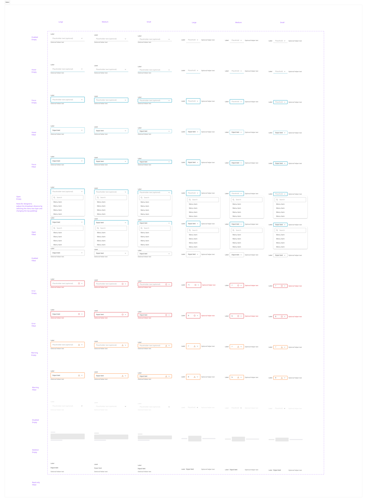

Talent Intelligence Design System · SHL
Recruiters felt like they'd switched companies mid-task.
SHL's Talent Intelligence platform spanned TC, iAssess, Reporting, and Insights, four legacy tools built at different times, each with its own front-end framework and interaction language. I helped build the unified design system that replaced that patchwork: shared tokens, a documented component library, and the governance to keep it consistent as the platform grows.
- My role
- Design system contributor: audit, tokens, components, docs
- Team
- Product, Design, Engineering, Science & Solutions
- Scope
- Foundations for the new Talent Intelligence (TI) platform
- Platform
- Web · enterprise B2B SaaS

The color foundation the rest of the system was built on, every shade paired with its accessibility contrast score.
design system built from scratch alongside the new TI platform
accessibility built into tokens and components, not bolted on after
adapted, not reinvented, to save engineering months
The problem
Four platforms, four different decades of design decisions, one recruiter stuck switching between all of them.

A customer's digital journey with SHL often spans multiple legacy platforms: TC for projects and candidates, iAssess for assessment delivery, Reporting, and Insights for analytics. Each was built at a different time, on a different front-end framework, with its own design language and interaction patterns. A typical user could hit two or three entirely different interfaces inside a single workflow.


Four corners of one workflow, none of which agree on how a table, a button, or a chart should look.
The inherited landscape presented several obstacles:
- Multiple independent platforms with disconnected UI languages.
- Inconsistent accessibility and interaction patterns across products.
- Repeated design and development work, the same pattern rebuilt from scratch in every team.
- Confusion for end users navigating between dramatically different UIs, sometimes serious enough to read as a security concern, the interface changed so much it felt like a different company.
- Difficulty maintaining and scaling visual styles across product lines.
The move to a new TI platform was the opening to fix not just one experience, but how every future SHL experience would look, feel, and function.
My role
I joined the design system effort as part of a cross-functional team spanning Product, Design, Engineering, and Science & Solutions. My focus was the foundations recruiters and designers would actually touch every day.
- Audited the existing UI across TC, iAssess, Reporting, and Insights, cataloguing every inconsistency, accessibility gap, and duplicated pattern.
- Contributed to the design principles and token system that became the system's foundation.
- Built and documented components in the shared library, matched to Storybook so engineering could validate behavior against the design spec.
- Partnered with a dedicated engineering owner to keep implementation and design in sync as the system scaled.

The audit I ran before writing a single token: every UI pattern across four platforms, mapped side by side.
The decision
Simply updating the existing platform wouldn't solve the deeper issues of consistency, performance, and scalability. So the call was made: build the new Talent Intelligence platform from scratch, and put a unified, scalable design system at its core.
Everything downstream, tokens, components, documentation, governance, exists because of that one call.
The approach
Two moves accelerated the system without sacrificing quality.
Start from what already works
Rather than inventing every pattern from scratch, we adapted Carbon Design System for its robust, modular foundations and Material UI (MUI) for its flexible component ecosystem, customizing for SHL's brand and workflows instead of reinventing standard UI elements that didn't need reinventing.

The two systems we built on top of, not the two systems we copied.
Define what "good" means before building anything
Before any component shipped, we agreed on four principles every part of the system had to meet:
Accessible
Compliant with WCAG 2.1 AA: color contrast, screen reader semantics, keyboard navigation, and interaction states, built in, not retrofitted.
Intuitive & human-centric
Minimizes cognitive load with consistent patterns users can rely on.
Aesthetic & modern
A refreshed visual identity: clean typography hierarchy, a brand-aligned color system, simplified iconography, balanced spacing.
Scalable & adaptable
Every component modular and reusable, built for mobile, tablet, and desktop, and expandable as TI grows.
Building the system
With principles set, the system took shape in four layers, live inside the platform, not just documented in Figma.

The system already live inside TalentCentral+: the same tokens and components carrying through job-profile recommendations.
Design tokens
A core set of reusable tokens, color, typography, spacing, motion, keeps every product visually aligned and turns a platform-wide update into a token change instead of a re-design.

Every color variable documented with its use, its states, and where it's safe to swap.
Modular component library
Accessible, documented, reusable components engineered against Storybook form the building blocks of the TI platform and every SHL experience after it.

One button component, every state and variant it needs to ship, documented before an engineer ever touches it.
Interaction patterns
Standardized behaviors for navigation, forms, feedback, and loading states, so the same input, error, or dropdown behaves identically no matter which product it's in.

Every field, every state, enabled to disabled, error to loading, specified once and reused everywhere.
Documentation & engineering
A system nobody can find or trust doesn't get used. Every component's documentation covers usage guidelines, variants and states, the prop list, and the tokens it consumes, so designers and engineers understand not just how to use a component, but why it's built that way.

Props, variants, and container types, specified once so nobody has to guess.

Usage guidelines: what the button component allows, and what it explicitly doesn't.
Collaboration with engineering
A design system is a cross-functional product, not a design-only project. We aligned tech leadership early to share ownership, set up Storybook as the single source of truth for validating components and interaction behavior, and assigned a dedicated engineering owner, which accelerated implementation and kept governance consistent.

Storybook as the shared source of truth: the same component spec designers reviewed and engineers implemented against.
Impact
aligns Product, Design, Engineering, and Science & Solutions on one shared system
reusable components and predictable patterns shortened build cycles
higher quality and accessibility standards, reducing errors and improving long-term stability
SHL needed a unified design system to streamline how products are built, maintained, and scaled across teams. With multiple functions contributing to the Talent Intelligence platform, there was a strong need for shared standards, faster delivery mechanisms, and a cohesive experience foundation that could support future growth.
Beyond speed, the system built something harder to quantify: trust. The same button, the same error state, the same filter, behaving identically everywhere a recruiter or candidate encounters it.
Reflection
A design system is a cross-functional product, not a design-only project, tech leadership alignment turned out to matter as much as any token. Working against a real workflow, Talent Management, kept the system grounded in reality instead of becoming a components-for-their-own-sake exercise. And adapting Carbon and MUI rather than reinventing them was the single biggest accelerant to quality and delivery.
The harder lesson was about what happens after launch: governance is crucial. Without clear ownership, a design system deteriorates the moment its authors stop watching it. Consistency is what builds trust, internally between teams, and externally for the people who use what we ship. More than a component library, it became the strategic foundation the rest of SHL's Talent Intelligence ecosystem builds on.